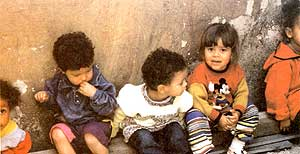
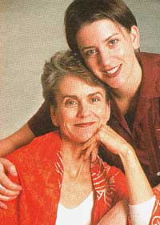
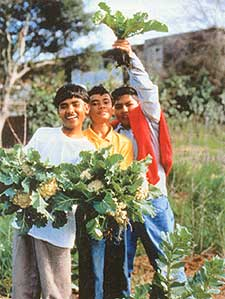
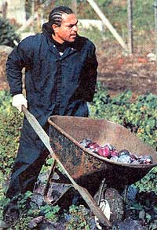
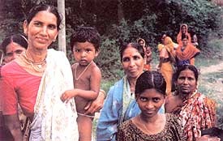

Frances Moore Lappé new book, Hope's Edge, shows how communities around the world are practicing grassroots democracy and taking control of their own food sources.
In their quietly elegant way, Frances Moore Lappé and Anna Lappé are sowing the seeds of and reporting on a revolution. Frances calls it the "Rebellion of the Guinea Pigs," and it's one that involves us all.
As citizens of the industrialized world, we are part of what Frances-Frankie, as she's known informally-describes as "the greatest nutrition experiment ever conducted." Our high-sugar, high-fat diet marks a radical departure from the unprocessed, plant-centered diet of our ancestors. In the United States alone, staggering statistics for obesity and diet-related diseases show just how poorly the guinea pigs-that would be us-are doing.
The diet isn't so great for our planet either, devouring water and prime agricultural land and spewing cancer-causing chemicals into the soil, air and water, in quantities too vast for the ecosystem to process. The social, political and economic costs of this dietary excess boggle the mind, but here's one statistic to consider: Approximately 1 billion people on Earth are obese; roughly an equal number are starving. Within that disparity lie chasms of potential conflict.
Something has to give. And as the mother-daughter duo demonstrate in example after example in their heartening book, Hope's Edge: The Next Diet for a Small Planet, ending this "experiment" can be lifesaving, health and community producing, deeply satisfying and joyous. Most revolutions can't be described as delicious. This one absolutely is.
Thirty years ago Frances Moore Lappé became a household name with the publication of her remarkable little book, Diet for a Small Planet. That earth-shaking book was the product of a questing intellect, which still hasn't hung up its traveling shoes. She was 26, living in Berkeley, California, the heart of the we-can-change-the-world '60s zeitgeist, and her questions seemed fairly simple: What causes poverty? What can we do to end hunger and suffering? Why isn't there enough food?
What she discovered and shared with the world in her book was the shocking revelation that hunger and poverty were not the inevitable results of scarcity, as the experts of the day were proclaiming. There was plenty of food to go around, but people were so poor they couldn't afford to buy it, and we were feeding a third of the world's grain to livestock.
Today more than 50 percent of the world's grain goes to livestock. And while we're sucking water out of the aquifers, guzzling fossil fuel, burning down rain forests and gobbling up abundant protein and calories along the way, the myth of scarcity continues to thrive.
"What I found was not a lack of food but a lack of democracy-a shortage of people making local decisions about their food sources and land use. My intuition as a 26 year old was food would he the thread, the means to understanding the economic and political underpinnings of poverty," Frankie says. "Food is our most direct, intimate tie to the Earth, as well as a primary means of bonding with each other. Food is the starting point."
The 30 years since publication of Frankie's first book have seen an acceleration of environmental decline, a worsening of diets in the industrialized world and diet-related disease statistics chugging up the charts like the Little Engine that Could. But in the middle of all this individual and collective unhealthiness, another story is unfolding: one of hope, innovation and grassroots democracy.
This was the story Frankie wanted to tell in Hope's Edge one she wanted her children's generation to hear. For that, she needed Anna's partnership.
At 26, Anna was precisely the same age Frankie had been when she began Diet for a Small Planet. As proof the fruit doesn't fall far from the tree, Anna recently earned her master's degree from Columbia University's School of International and Public Affairs, specializing in economic and political development.
To pick up where the original Diet left off, Frankie and Anna traveled to five continents, interviewing and observing people who are transforming their societies and restoring the environment, sometimes one tree or one delicious meal at a time.
Although the projects are widely scattered and unconnected, a central theme emerges in Hope's Edge: Practical, personal paths can heal our lives and help our planet. As societies, we create the very inequalities and devastation of nature we as individuals abhor. The way out is individual responsibility and commitment in action. Often, the trail leads straight through the kitchen.
The book project turned into an enviable mother-daughter adventure, a journal of personal discovery, a lesson in basic civics and an affirmation of the difference one person can make.
"The Green Belt movement in Kenya started with one woman, Wangari Maathai, seeing the problem of the desert encroaching on what was once flourishing agricultural land," Anna says. "Kenya's lush forests were shrinking, and the land was literally turning to sand. So she began to plant trees."
Kenya's desertification is a familiar process throughout the world. Trees are cut down for farmland or fuel. When the trees go, so does the protection that keeps soil from blowing away in the wind. As the forest shrinks, the villagers are forced to walk farther and farther to get water and firewood, spreading the vicious cycle of forest loss, desertification and communities unable to feed themselves.
"That tree-planting movement has now become an organization fighting for democracy in Kenya, promoting food security and empowering women to see themselves as citizens," Anna says. "Wangari says the most powerful thing anyone can do for someone else is to help them realize their own power, their own ability to have the world around them align with their own deepest values. Everywhere we went on this journey we saw ordinary people making huge differences."
Started on Earth Day 1977, that one-woman movement in Kenya has now grown to include 6,000 registered groups throughout the country, each with its own tree nursery. At the time Frankie and Anna visited, more than 20 million trees had been planted and countless people had been empowered to see the forest as a public good that they have a right and duty to protect. It also has enabled people to see themselves as creators of solutions to the thorny, intertwined challenges facing their nation.
"Beneath it all is an understanding of what it means to be human," Frankie says. "Are human beings just this caricature? 'Selfish accumulators' with no thought except for what they can consume? Or do we all have deeper needs-for real connection, for effectiveness, for real community beyond our immediate families and for a worldview that supports nature rather than exploiting it?
"We're not proposing all economic exchange, all financial exchange, is evil, but what has so thrown our planet off balance and has led to such massive destruction of life is this reductionism that boils absolutely everything down to its market value."
Frankie hears a familiar ring these days when the biotech companies insist we must have genetically modified seeds to feed the world's hungry. Now, as then, hunger isn't a problem of scarcity, but of economics. The question is, how do humans build communities in concert with nature, in which everyone can grace their tables with healthy, safe food? Warm, written in friendly first person, Hope's Edge is full of answers to that question-and recipes to help readers participate in their own guinea pig rebellion. The following are a few excerpts-first person, as is the rest of the book.
In less than two decades, the Bangladeshi Grameen Bank has achieved what many thought impossible: It built a lending institution for the poor that actually works, putting loans in the hands of more than 2 million borrowers, almost all of them poor women. While the loans may seem tiny in Western terms-$160 on average-they make life-and-death differences here.
Grameen's success has even generated a whole new buzzword, microcredit, and brought its charismatic founder, Muhammad Yunus, international acclaim. The World Bank has tapped Yunus to advise on how to spread microcredit worldwide, and replications have popped up in more than 58 countries. Yunus says microcredit is so potent it can "put poverty in the museum, and we'll have to explain that awful thing to our grandchildren."
After a bumpy ride north of Dhaka, we arrive in the village of Azugara to sit in on a Grameen Bank meeting. Stepping into the tin-roofed hut, we watch while the Grameen center manager conducts today's business and women from different groups request loans. When they're finished, we have time for questions. When we ask how they've been using their loans, the women respond with many examples: Yarn for weaving. Feed for cow-fattening. Small grocery items for selling in the stall. A sewing machine.
I ask if the loans mean less hunger and better nutrition.
"Of course we have more food to eat now," a slender woman in a periwinkle-blue sari responds. "Before I was working on another man's land. Now I am taking rice off my own land."
Another explains, "Before, I was always paying a moneylender any money I made. Now we have our own businesses. I can feed my family."
Our host jumps in with his own question, "How many of you have housing loans?"
Hands shoot up, maybe a quarter of the room. These are women who've built a credit history and secured a larger-size Grameen loan to build their own homes. Our host points out the Grameen housing-loan huts, although their shiny new tin roofs are a dead giveaway.
In Bangladesh, Grameen has already spun off roughly a dozen new enterprises, mainly in the last six years. Grameen's sister companies are involved in weaving, renewable energy, marketing, communications software development, even a mobile-phone company that makes telephone use possible for the first time in many villages. Grameen has also created a kind of health insurance for its members, and it even offers educational scholarships. Many of these ideas are offshoots of others, building and growing like a hyacinth, which sends out shoots horizontally and swiftly sprouts new plants.
The Garden Project began as a horticulture program at the San Francisco County Jail in 1982. Cathrine Sneed, then a counselor, along with San Francisco Sheriff Michael Hennessey, decided to begin a program in which prisoners would work on the jail's farm to grow organic vegetables for homeless shelters.
A few years after the garden's launch, Hennessey ordered a study of the impact working in the garden had on prisoners. The study tracked 300 inmates. After three years, the evidence was in: Inmates involved in gardening were less than half as likely to return to prison.
Now inmates who have worked in the jail garden have the opportunity after release to get a decent-paying job on a half-acre garden plot Cathrine created in the Bayview-Hunters Point District-right next to a brand-new police station.
Despite his former street life and time in prison, project employee Anthony Travis looks far shy of his 35 years. AS he chats with us, it's clear he isn't surprised by the study showing the difference the garden experience makes.
"It's hard to get out of jail and stay out," he says. "There's no one to help you get on your feet. They say jail is about setting you straight: It's really about breaking you down to keep you doing what you were doing."
Anthony echoes Cathrine's view that most people who end up in jail have been driven to crime by deprivation and hunger. (As you weigh Anthony's and Cathrine's words about the impact of hunger, remember, at any given moment, more than 20 million Americans are wondering where they're going to get their next meal.)
The healing power of nature may be considered the arena of poets but Anthony offers an explanation that conveys perfectly the potency of this project.
"We always say, 'We don't just grow flowers and vegetables, we grow people.' This is a program built to help one another. If we can help one another, we can cut down on crime."
Some might overlook the helping-other-people aspect of why the garden works. Not Cathrine. "People need to feel useful," she says. "They need to feel their lives have meaning.
"When I go to the bare basics of what we're doing, its trying to replicate a family. In a family, whatever you have, you spread however thin you need to. If you have a piece of bread, you cut it 14 times."
Sharing and giving-including during one six-month period, 20,000 pounds of broccoli, potatoes, zucchini, cabbage and kale-are key to the projects transformative power. In a statement that is a far cry from the presumed human need for self gain embodied in the prevailing mental map, Cathrine sums it up.
"We have to give to live.
A long, overnight bus ride north from São Paulo takes us to Belo Horizonte,
Brazil's fourth largest city. We're in Belo Horizonte-Beautiful Horizon-for one reason: It's the only city we know of in the capitalist world that has decided to make food security a right of citizenship.
In the United States, we take the right to education for granted. And though we don't have national health care, we expect the government to pay for care for those with no resources. Of course, eating healthy food is a prerequisite both to learning and to staying healthy, yet for most people "eating" and "rights of citizenship" aren't chewable in the same mouthful.
Not true in Belo Horizonte.
Well-fed children, bustling markets full of locally grown produce and cut-rate lunches for anyone who wants to eat are examples of dozens of striking innovations popping up in this city since 1993. That's when the city started thinking differently about ending hunger, partly in response to the cruel fact that one-fifth of the city's youngest children were suffering from malnutrition and many in the city lived on the edge of poverty.
"We believe the status of citizen surpasses that of consumer," explains Adriana Aranha, the woman in charge of the many activities aimed at ensuring everyone in Belo has access not just to enough calories, but also to quality food. She explains that while food may be a commodity, food security-having enough food to feed yourself and your family-is a human right, a right by virtue of being a citizen. People too poor to be consumers are still citizens, even if the market is shutting them out. It's the government's duty to correct for this "market failure," as an economist might call it.
Once people started thinking their way out of the "charity" trap, dozens of clever actions sprang up inside Adriana's city agency, many designed to improve the way the market works, not supplant it.
"We're fighting the concept that the state is a terrible, incompetent administrator," Adriana says. "We're showing the state doesn't have to provide everything, it can facilitate. It can create channels for people to find solutions themselves."
I wonder if Adriana realizes her city may be the only one in the world taking this approach: food as a right of citizenship, of membership in the human family.
So I ask, "When you began, did you realize how important what you were doing was? How much difference it might make? How rare it is in the entire world?"
Listening to her long answer in Portuguese without understanding, I see her eyes moisten.
"I knew we had so much hunger in the world," she says. "But what is so upsetting, what I didn't know when I started this, is it's so easy.
"It's so easy to end it."
|
 COURTESY SARAH PUTNAM; ABOVE: ANNA BLYTH LAPP? These giggling 3- and 4-year-olds in Belo Horizonte, Brazil, get four nutritious meals a day in an innovative city program that treats food as a right of citizenship. Children in poor communities are given tasty food enriched with ground eggshell, manioc leaves and other nutritious ingredients that would otherwise be thrown away. |
 ENE OSTERAAS-CONSTABLE Authors Frances Moore Lapp? and her daughter, Anna Lapp? , found grassroots democracy springing up all over the world. |
 MATTHEW SUMNER Children in Berkeley, California's Edible Schoolyard have started a Green Revolution by growing for themselves. The Schoolyard is one of many initiatives the Lapp cover in Hope's Edge. |
|
 ANNA BLYTHE LAPP Former prison inmate Phillip Limutau is now a staff member with the Garden Project, which grows organic food for indigent people in San Francisco. |
 Thousands of women's lives in Bangladesh have been transformed by loans from Grameen Bank. The United Nations wants to expand the concept. |
|